Csoport neve: Fü(r)ge Soft
Feladat címe: Soft Mozi
Felhasználói Kézikönyv
Gyakorlatvezető:
Árvai László
Csoport tagok:
| Padányi Milán | FMUL84 | mpadanyi09@gmail.com |
| Ujfalussy Kristóf | ZZORDN | kristof.ujfalussy@student.uni-miskolc.hu |
| Kecskés Gábor | QDY6TL | gabor.kecskes@student.uni-miskolc.hu |
| Lengyel János | N9XZKQ | lengyeljanos2004@gmail.com |
| Laczkó Norbert | SLIIKD | laczkonorbert4@gmail.com |
2026-11-06
Történet:
| Dátum | Verzió | Leírás | Szerző |
| 2026-11-06 |
0.1 |
Létrejött a dokumentum váza: fejezetek, a vendég, a dolgozó és az admin felület főbb lépései vázlatosan.
A kézikönyv a fejlesztés előrehaladtával, a kész felületek képernyőképeivel bővül. |
Lengyel János |
| 2026-11-06 |
0.2 |
Minta képernyőképek (tervek) hozzáadása: mozi műsora, székválasztás, e-jegy telefonon, jegyellenőrzés a dolgozói tableten, műsortervező. |
Ujfalussy Kristóf
Laczkó Norbert |
| 2026-11-21 |
0.3 |
Frissítés a Rendszer Tervezés (H5) tesztelési tervével összhangban: a bejelentkezés, a jegyellenőrzés és a dolgozói feladatok
folyamatábrái, a felület visszajelzései (zöld és piros sáv), a tesztekben elvárt hibaüzenetek, új gyakori kérdések, az ábrák újraszámozása. |
Lengyel János |
| 2026-11-21 |
0.4 |
Új minta képernyőképek (tervek): regisztráció, hibás belépés, AI ajánló, teremszerkesztő, statisztikák.
Az AI ajánló, a büfé kiadás, a teremszerkesztő és a segítség fejezet kidolgozása, a hibaüzenetek kiegészítése. |
Ujfalussy Kristóf
Laczkó Norbert |
Tartalomjegyzék:
Felhasználói Kézikönyv
1. Bevezetés
1.1 Kinek szól a kézikönyv
A kézikönyv a Soft Mozi rendszer mindhárom felhasználói körének szól: a vendégeknek, akik jegyet vesznek,
a dolgozóknak, akik a moziban a jegyeket ellenőrzik és a termeket rendben tartják, és az
adminisztrátoroknak, akik a mozihálózatot kezelik. Mindenkinek elég a saját fejezetét elolvasnia,
valamint az Első lépések részt.
1.2 Rendszerkövetelmények
- Modern böngésző (Chrome, Firefox, Safari, Edge) számítógépen vagy telefonon.
- Internetkapcsolat.
- Dolgozóknak: tablet kamerával (a QR-kód beolvasásához), a böngészőben engedélyezni kell a kamera használatát.
1.3 Szerepkörök
| Szerepkör | Mit tud | Hogyan lesz valaki ilyen |
| Látogató (nincs bejelentkezve) | Mozik, műsor és filmek böngészése. | – |
| Vendég | Jegy- és büfévásárlás, értékelés, profil, hűségpontok. | Regisztrációval. |
| Dolgozó | Jegyellenőrzés, feladatok, székhiba bejelentése a saját moziban. | Az admin állítja be. |
| Admin | A teljes rendszer kezelése. | Az admin állítja be. |
2. Első lépések
2.1 Regisztráció
- Kattintson a jobb felső sarokban a Regisztráció gombra.
- Adja meg a nevét, e-mail címét, jelszavát és születési dátumát.
- Fogadja el az adatkezelési tájékoztatót, és kattintson a Regisztráció gombra.
- Nyissa meg a kapott e-mailt, és kattintson a megerősítő linkre. Jegyet csak megerősített fiókkal vásárolhat.
A jelszó legalább 8 karakter legyen, és legyen benne szám. Ha az e-mail címmel már regisztráltak, a rendszer ezt kiírja: ilyenkor
jelentkezzen be, vagy használja az
Elfelejtett jelszó linket.
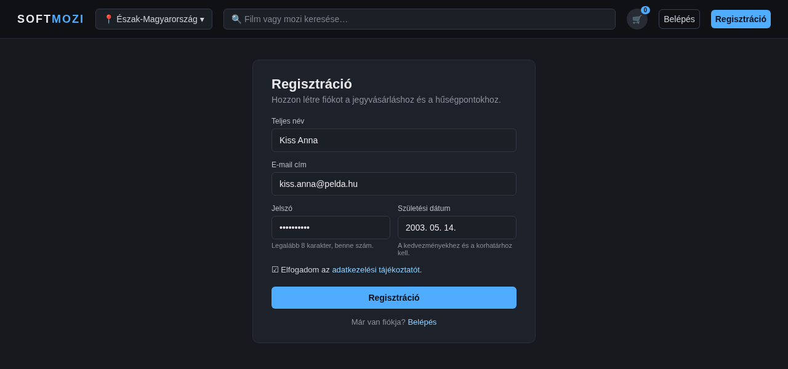
1. ábra: A regisztrációs űrlap (tervezet, a végleges felület eltérhet)
2.2 Bejelentkezés és elfelejtett jelszó
Bejelentkezni e-mail címmel és jelszóval lehet. Bejelentkezés után a rendszer a szerepkörének megfelelő kezdőlapra viszi.
Ha elfelejtette a jelszavát, kattintson az
Elfelejtett jelszó linkre, és kövesse az e-mailben kapott utasításokat.
A rendszer minden műveletnél visszajelez a képernyő tetején: zöld sáv jelzi, ha a művelet sikerült,
piros sáv, ha nem, és a sávban az is olvasható, mi a teendő.
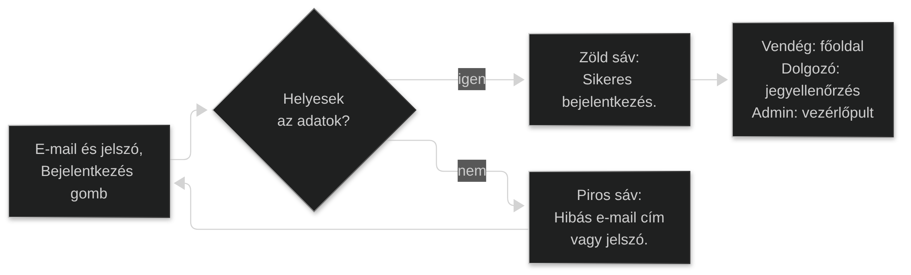
2. ábra: Bejelentkezés és a felület visszajelzései
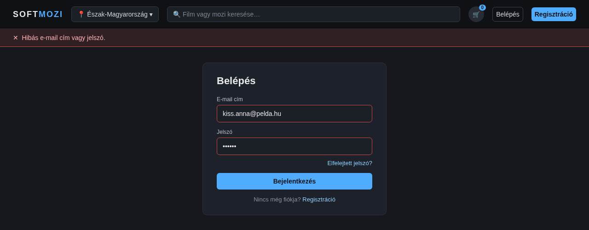
3. ábra: Hibás jelszó után: a piros sáv a képernyő tetején, a mezők pirosan keretezve (tervezet, a végleges felület eltérhet)
2.3 Profil és kedvezmények
A
Profil oldalon módosíthatja a nevét, telefonszámát és profilképét, valamint beállíthatja a kedvezményét
(diák, nyugdíjas, gyerek). A kedvezmény feltételei:
- Diák: 26 éves korig, diákigazolvánnyal (a belépésnél ellenőrizhetik).
- Gyerek: 14 év alatt. Nyugdíjas: 65 év felett (a születési dátum alapján).
Itt lehet a fiókot is törölni. Ilyenkor a személyes adatai törlődnek.
3. Vendégeknek
3.1 Mozi és film keresése
Válasszon régiót a felső menüben, majd egy mozit. A mozi oldalán a napi műsor látszik, amit műfaj, technológia (2D, 3D, IMAX, 4DX),
nyelv és napszak szerint szűrhet. Egy filmre kattintva megnyílik a filmadatlap a leírással, az előzetessel és az értékelésekkel.
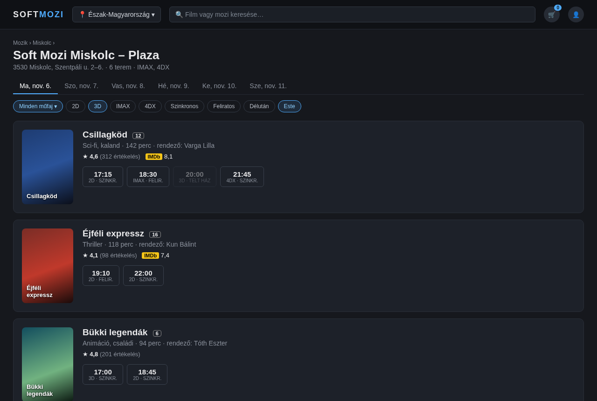
4. ábra: Egy mozi napi műsora a szűrőkkel (tervezet, a végleges felület eltérhet)
3.2 Jegyvásárlás lépésről lépésre
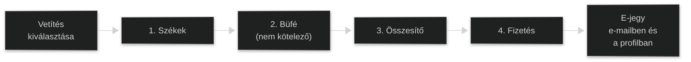
5. ábra: A jegyvásárlás lépései
- Székek: kattintson a szabad (szürke) székekre, legfeljebb 10-et választhat. A kiválasztott székek kékre váltanak, és
10 percig fenntartjuk őket Önnek, a hátralévő idő a jobb felső sarokban látszik. Ha egy széket közben valaki más választott ki,
az szürkén foglalt lesz, és piros sávban értesítjük.
- Büfé: ha szeretne, tegyen a kosárba üdítőt, popcornt, extrákat.
- Összesítő: ellenőrizze a tételeket. Itt látja a kedvezményt, és itt válthatja be a hűségpontjait.
- Fizetés: a rendszer átirányítja a fizetési oldalra. Sikeres fizetés után megkapja az e-jegyet.
Ha a fizetés nem sikerül, visszakerül az összesítőre, a székei a 10 perc végéig a kosárban maradnak, így újra próbálkozhat.
Fontos: ha a 10 perc lejár, a székek felszabadulnak, és elölről kell kezdeni.
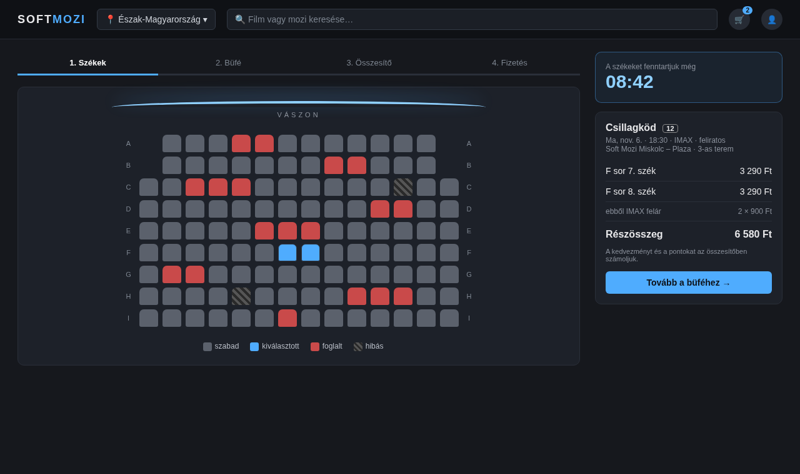
6. ábra: Az 1. lépés: székválasztás a teremtérképen, jobb oldalon a hátralévő idő és a kosár (tervezet, a végleges felület eltérhet)
3.3 Jegyeim, lemondás, hűségpontok
- A Jegyeim oldalon látja a megvett jegyeket QR-kóddal. A belépéskor ezt kell felmutatni.
- A jegyet a vetítés előtt legalább 2 órával lemondhatja, ilyenkor a jegy és a büfé ára is visszajár.
- Minden 100 Ft után 1 pont jár, 100 pont = 500 Ft kedvezmény. A pontok 1 évig érvényesek.
- A vásárlásról PDF nyugtát is letölthet.
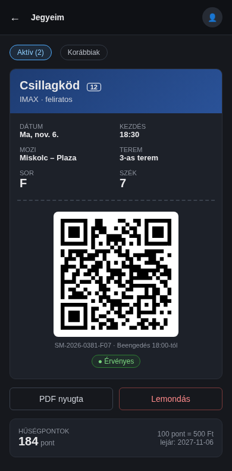
7. ábra: Az e-jegy QR-kóddal és a hűségpontok telefonon (tervezet, a végleges felület eltérhet)
3.4 Filmek értékelése és AI ajánló
Ha megnézett egy filmet, a filmadatlapon 1-5 csillaggal értékelheti. Az
AI ajánló a korábbi vásárlásai és
értékelései alapján javasol filmeket és vetítéseket.
- Az ajánlót a felső menü Ajánlott Önnek pontjában éri el (bejelentkezés szükséges).
- Minden ajánlás alatt olvasható, miért kapta (pl. mert egy hasonló filmet 5 csillagra értékelt), és a következő 7 nap vetítései a választott régióban.
- Egy időpontra kattintva rögtön a székválasztásra jut.
- Ha egy ajánlás nem tetszik, a Nem érdekel lehetőséggel elrejtheti, és ezt az ajánló a következő alkalommal figyelembe veszi.
- Csak olyan filmet ajánlunk, amelyet a korhatár alapján megnézhet. Ha még nem vásárolt, a legnépszerűbb filmek jelennek meg.
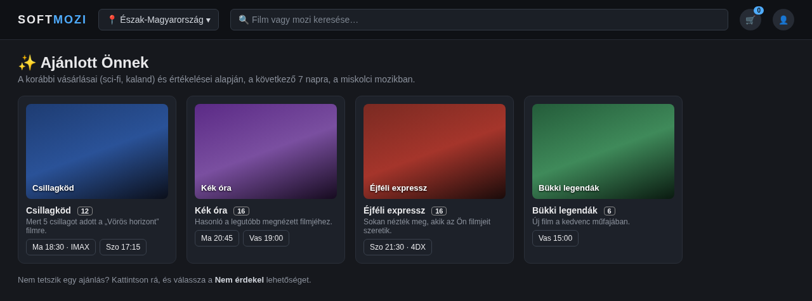
8. ábra: Az AI ajánló oldala az ajánlások indoklásával (tervezet, a végleges felület eltérhet)
4. Dolgozóknak
4.1 Jegyellenőrzés
- Nyomja meg a Beolvasás gombot, és tartsa a kamerát a vendég QR-kódja elé.
- Zöld képernyő: a jegy érvényes, a vendég beléphet. A képernyőn látszik a terem, a sor és a szék.
- Piros képernyő: a jegy érvénytelen. Az ok is megjelenik (másik mozi, rossz időpont, már felhasznált).
A beengedés a vetítés előtt 30 perccel kezdődik, és a kezdés után 20 percig tart.
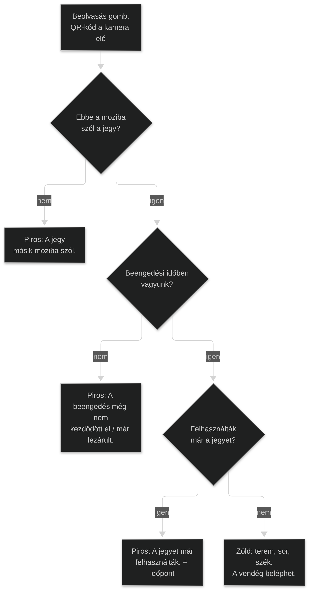
9. ábra: Mit ellenőriz a rendszer a QR-kód beolvasásakor
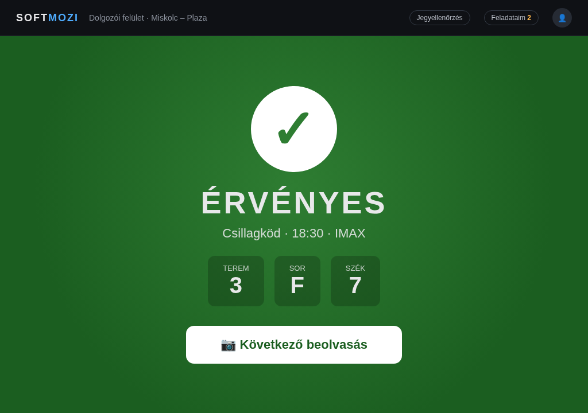
10. ábra: Érvényes jegy beolvasása után a dolgozói tableten (tervezet, a végleges felület eltérhet)
4.2 Takarítási és javítási feladatok
- Új feladatnál hangjelzés szól, és megjelenik egy kártya a Feladataim oldalon.
- Az Elfogadom gombbal vállalja a feladatot, a Rendben gombbal jelzi, hogy végzett.
- Ha egy szék elromlott, a Székhiba bejelentése oldalon válassza ki a termet és a széket. A széket ezután nem lehet eladni,
amíg a szerelő meg nem javítja.
- Ha egy feladatot 15 percig senki nem fogad el, a rendszer mindenkinek és az adminnak is szól.
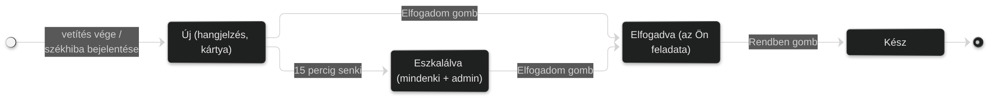
11. ábra: Egy feladat útja a Feladataim oldalon
4.3 Büfé rendelés kiadása
Olvassa be a vendég QR-kódját a
Büfé kiadás oldalon. Megjelenik az előre kifizetett rendelés, a kiadás után
nyomja meg a
Kiadva gombot.
- A rendelés csak abban a moziban adható ki, ahová a jegy szól, és csak a vetítés napján.
- Ha a rendelésben extra is van (pl. sajtszósz, nagyobb méret), az kiemelve látszik a tétel mellett.
- Egy rendelést csak egyszer lehet kiadni. Ha a vendég újra mutatja a kódot, a képernyőn a „Már kiadva” felirat és a kiadás időpontja jelenik meg.
- Ha egy termék elfogyott, cserélje egy azonos árú termékre a vendég beleegyezésével, vagy küldje a pénztárba visszatérítésért.
Ez a funkció a fejlesztés utolsó szakaszában készül el (SRS FK-24, „ha marad idő” követelmény).
5. Adminisztrátoroknak
5.1 Régiók, mozik, termek
Az oldalsó menü
Mozik pontjában lehet régiókat, mozikat, termeket és a termek székeit felvenni, módosítani, törölni.
Új teremnél a Teremszerkesztő nyílik meg:
- Adja meg a terem nevét, a sorok számát és a soronkénti székek számát. A sorok betűt (A, B, …), a székek számot kapnak.
- A Folyosó a szék után mezőben adja meg, hányadik szék után legyen folyosó (pl. „4, 8”).
- Kattintson egy székre, ha azt a helyet ki kell hagyni (pl. oszlop vagy kerekesszékes hely miatt): a hely szaggatottan jelenik meg.
- A kapacitás a ténylegesen meglévő székekből számolódik. Mentés után a terem megjelenik a műsortervezőben.
A pirosan jelölt székeket a dolgozók jelentették hibásnak (4.2 pont), ezeket a rendszer nem adja el, amíg a szerelő meg nem javítja őket.
Olyan termet vagy széket nem lehet törölni, amelyre már van eladott jegy.
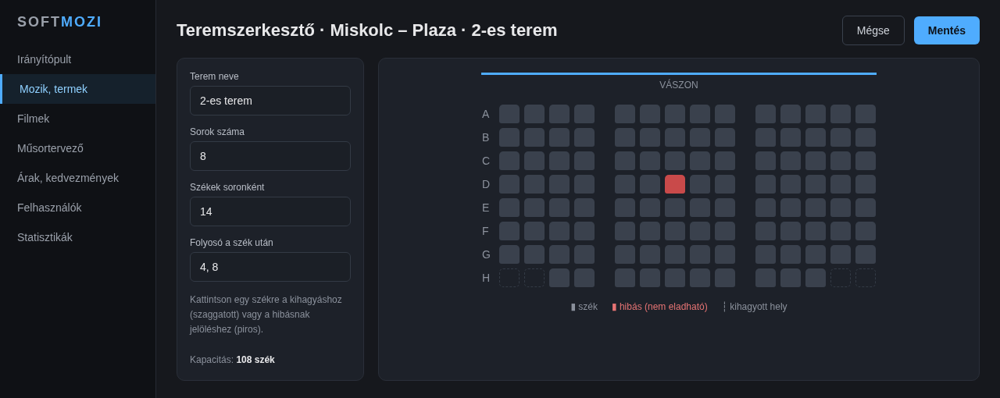
12. ábra: A teremszerkesztő: folyosók, kihagyott helyek és egy hibás szék (tervezet, a végleges felület eltérhet)
5.2 Műsortervezés
- Válassza ki a mozit és a napot. Termenként egy idősáv jelenik meg.
- Húzza a filmet a megfelelő idősávba, adja meg a nyelvet és a technológiát.
- Ha a vetítés ütközik egy másikkal (a 20 perces takarítási időt is beleszámolva), pirosan jelenik meg, és nem menthető.
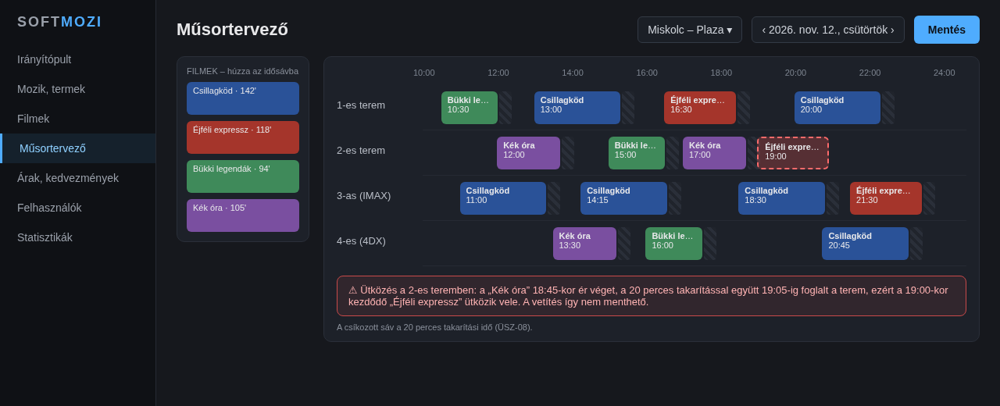
13. ábra: A műsortervező egy ütköző vetítéssel a 2-es teremben (tervezet, a végleges felület eltérhet)
5.3 Árak és kedvezmények
Itt állíthatók be a büfé árak mozinként, a kedvezmények százalékai és a dinamikus árazás.
A dinamikus ár legfeljebb 30%-kal lehet olcsóbb vagy 25%-kal drágább az alapárnál.
5.4 Felhasználók és jogosultságok
Keresse meg a felhasználót, módosítsa a jogosultságát (vendég, dolgozó, admin), és dolgozónál válassza ki a mozit, ahol dolgozik.
5.5 Statisztikák
Bevétel, eladott jegyek és büfé eladások mozinként és régiónként, grafikonokkal. A felső szűrőkkel választható ki a régió, a mozi és a hónap.
A táblázat a
CSV letöltése gombbal letölthető, és Excelben megnyitható.
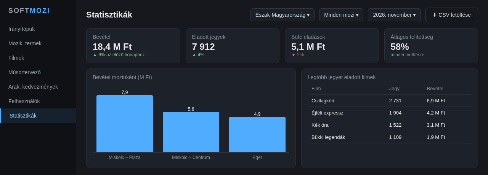
14. ábra: A statisztikák oldal egy régió havi adataival (tervezet, a végleges felület eltérhet)
6. Hibaüzenetek és megoldásuk
A hibaüzenetek a képernyő tetején, piros sávban jelennek meg (a dolgozói tableten a jegyellenőrzésnél a teljes képernyő piros).
| Üzenet | Mit jelent | Mit tegyen |
| „Hibás e-mail cím vagy jelszó.” | A megadott adatokkal nincs fiók. | Ellenőrizze az adatokat, vagy használja az Elfelejtett jelszó linket. |
| „Ezzel az e-mail címmel már regisztráltak.” | Már van fiókja ezzel a címmel. | Jelentkezzen be, vagy kérjen új jelszót. |
| „Ehhez a művelethez nincs jogosultsága.” | Olyan oldalt nyitott meg, amely nem az Ön szerepköréhez tartozik. | Ha úgy gondolja, hogy Önnek ehhez joga van, keresse az adminisztrátort. |
| „Ezt a széket közben valaki más választotta.” | Egy másik vendég gyorsabb volt. | Válasszon másik széket. |
| „Egyszerre legfeljebb 10 széket választhat.” | Elérte a 10 széket egy vásárlásban. | Fejezze be a vásárlást, és indítson egy újat. |
| „Lejárt a foglalási idő.” | Eltelt a 10 perc fizetés nélkül. | Kezdje újra a vásárlást. |
| „Sikertelen fizetés.” | A bank elutasította a fizetést. | Próbálja újra, vagy használjon másik kártyát. |
| „A jegyet a vetítés előtt 2 órán belül már nem lehet lemondani.” | Túl késő a lemondáshoz. | – |
| „Erre a filmre nem vásárolhat jegyet.” | A korhatár miatt. | – |
| „A munkamenet lejárt.” | Régen jelentkezett be. | Jelentkezzen be újra. |
| „A jegyet már felhasználták.” (dolgozó) | A QR-kódot már beolvasták, az időpont is látszik. | Ne engedje be a vendéget, szükség esetén hívja a műszakvezetőt. |
| „Ismeretlen jegy.” (dolgozó) | A QR-kód nem olvasható, vagy nem a Soft Mozi jegye. | Próbálja újra, vagy írja be kézzel a jegy alatti kódot. |
| „Nincs kapcsolat.” (dolgozó) | A tablet nem éri el a szervert. | Ellenőrizze a Wi-Fi-t; addig a jegyet a pénztárban ellenőriztesse. |
| „A jegy másik moziba szól.” (dolgozó) | A vendég rossz moziba jött. | Mondja meg a vendégnek, melyik moziba szól a jegye. |
| „A beengedés még nem kezdődött el.” / „A beengedés már lezárult.” (dolgozó) | 30 percnél korábban, vagy a kezdés után 20 percnél később. | Kérje meg a vendéget, hogy várjon, illetve irányítsa a pénztárhoz. |
| „A vetítés ütközik egy másikkal.” (admin) | Ugyanabban a teremben átfedés van. | Válasszon másik időpontot vagy termet. |
7. Gyakori kérdések
- Nem kaptam meg az e-jegyet. Nézze meg a levélszemét mappát. A jegy a profiljában a Jegyeim oldalon is megtalálható.
- Kinyomtassam a jegyet? Nem kell, elég a telefonon felmutatni a QR-kódot.
- Használhatok két kedvezményt egyszerre? Nem, egy jegyre egy kedvezmény jár, de a hűségpontok mellette is beválthatók.
- Mi történik, ha valaki más is ugyanarra a székre kattint? Az kapja meg, aki előbb kattintott. A másik vendégnél a szék azonnal foglaltra vált, és piros sávban értesítjük.
- Elutasították a kártyámat. Elvesztek a székeim? Nem, a 10 perc végéig a kosárban maradnak, közben újra próbálkozhat vagy másik kártyát adhat meg.
- Bezártam a böngészőt vásárlás közben. Ha a 10 perc még nem telt le, a vetítést újra megnyitva folytathatja, utána a székek felszabadulnak.
- Lemondtam a jegyet. Mikor kapom vissza a pénzt? A visszatérítést azonnal elindítjuk, a bankjától függően 3–5 munkanapon belül érkezik meg. A vásárlásért kapott hűségpontokat levonjuk.
- Miért nem látok egy filmet az ajánlóban? Csak olyan filmet ajánlunk, amelyre a korhatár alapján vehet jegyet, és amelyet nem rejtett el a Nem érdekel lehetőséggel.
- (Dolgozóknak) Másik moziban helyettesítek. Miért kapok „másik moziba szól” hibát? Az admin állítja át, melyik moziban dolgozik. Az átállítás után jelentkezzen ki, majd be.
8. Segítség és kapcsolat
Ha a kézikönyvben nem talál választ, írjon az ügyfélszolgálatnak.
- Vendégek: a profil menü Segítség pontjában található űrlapon, vagy az
ugyfelszolgalat@softmozi.hu címen. Munkanapokon 1 napon belül válaszolunk. Jegyvásárlással kapcsolatos kérdésnél
írja meg a rendelés számát is (a Jegyeim oldalon és az e-jegyen található).
- A moziban: a pénztárban a munkatársak segítenek a jegyekkel és a lemondással kapcsolatban.
- Dolgozók: műszak közben a műszakvezetőhöz forduljanak; technikai hibát (pl. a tablet nem olvassa a QR-kódot) az admin felé jelezzenek.